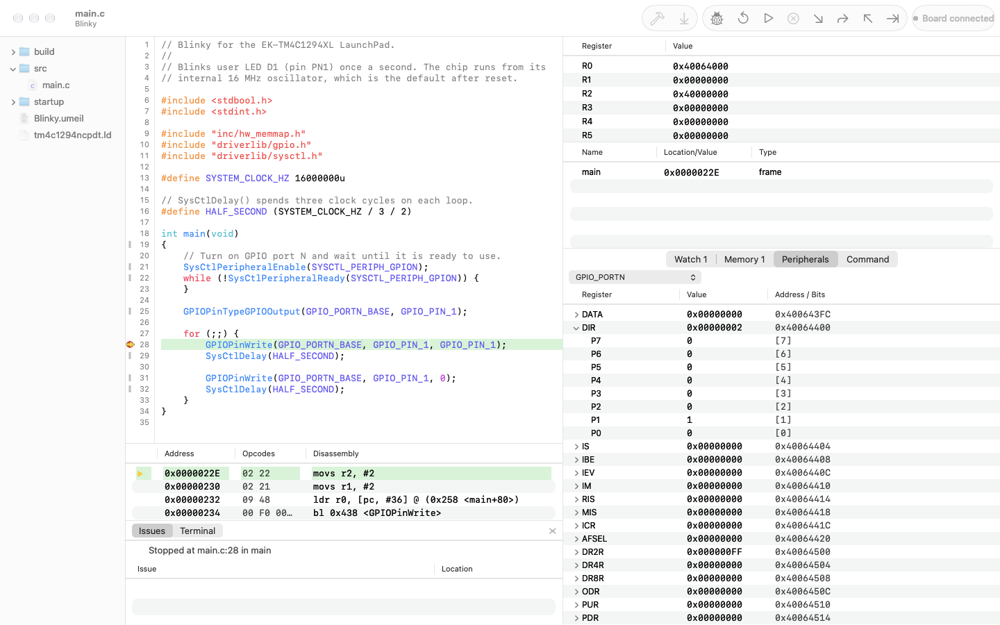

Build
A C editor with highlighting, autocomplete, go to definition and inline errors from clangd, and a built-in build system around Arm's GNU toolchain.
Flash
One button builds and writes your program to the board through OpenOCD, with plain-language errors when the board is missing or the chip is locked.
Debug
Breakpoints, stepping, the call stack, locals, CPU registers, memory, and every peripheral register with its bit fields, read from the running chip.
Bring your course work
Import Keil µVision projects (.uvprojx) as they are, and talk to the board's UART in the serial monitor.
Install
Open the DMG and drag uMeil to Applications. On first launch uMeil finds the compiler, debugger and OpenOCD you already have, or downloads Arm's official toolchain and xPack OpenOCD for you.
With Homebrew:
brew tap hadialk4/umeil https://github.com/HadiAlk4/uMeil
brew install --cask umeilUntil uMeil is notarized by Apple, macOS will say it cannot check the app for malicious software the first time you open it. Open it once, then choose Open Anyway in System Settings › Privacy & Security.
Requirements
- A Mac with Apple Silicon (M1 or later). Intel Macs are not supported.
- macOS 14 Sonoma or later.
- An EK-TM4C1294XL LaunchPad, connected over its debug USB port, to flash and debug.
- About 1 GB of disk space for the toolchain, if uMeil downloads it.